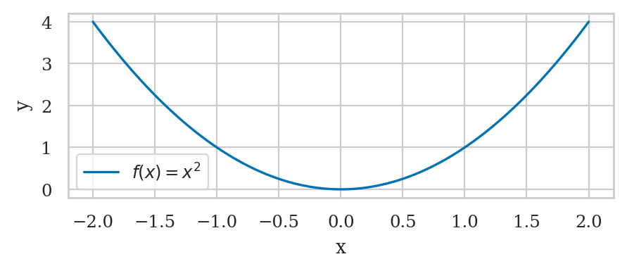
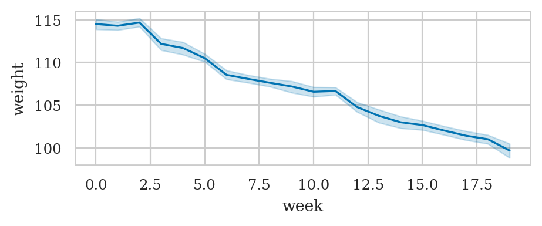
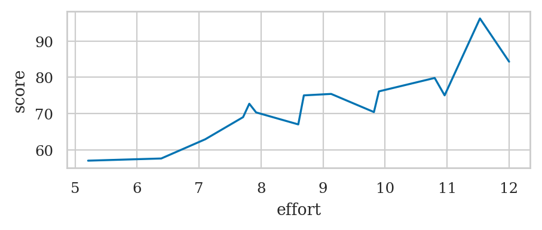
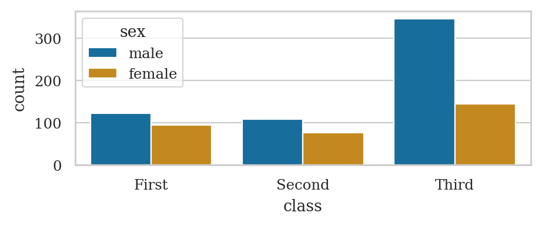
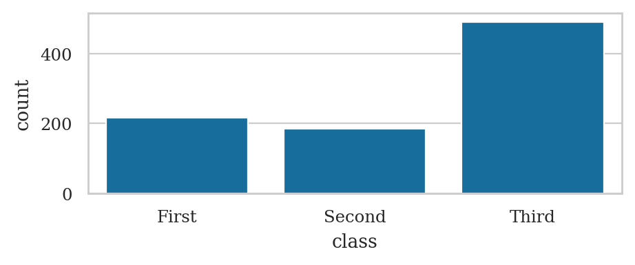
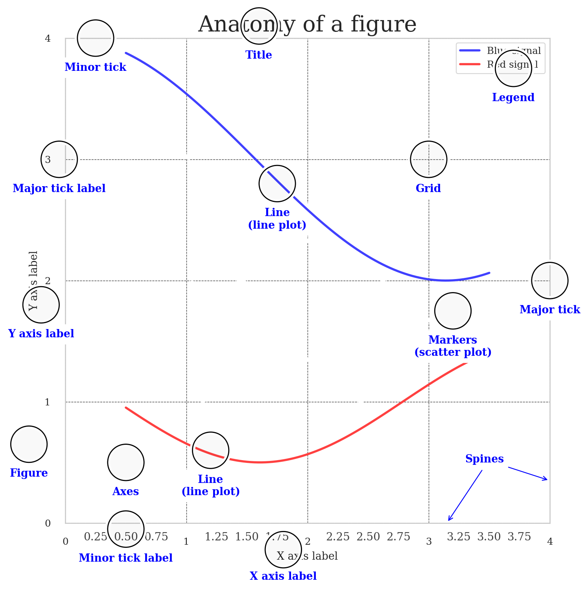
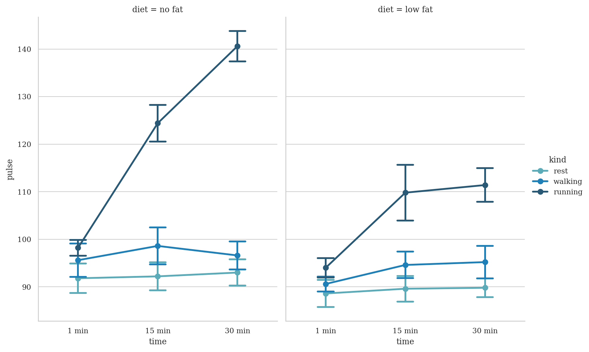
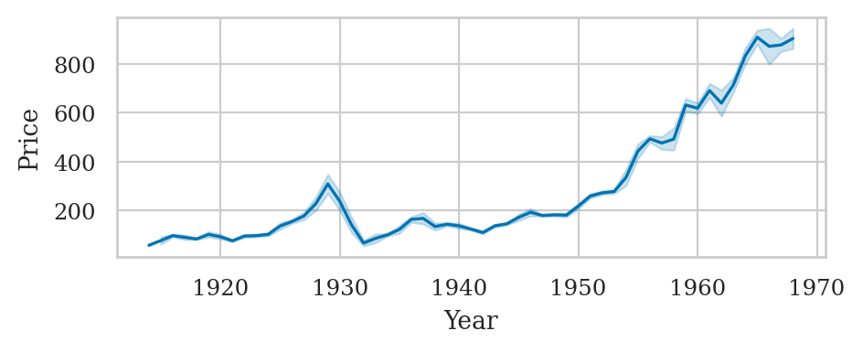

Appendix E — Seaborn tutorial#
In this tutorial, we’ll learn about the Seaborn library for data visualizations. We’ll start by explaining the plotting function interface that is common to all Seaborn functions, then list all the Seaborn functions thought examples. We’ll also describe the various options for customize plots’ the appearance, add adding annotations and labels.
Click the binder button  or this link
or this link bit.ly/4twDwZu
to play with the tutorial notebook interactively.
Notebook setup#
Before we begin the tutorial, we we must take care of some preliminary tasks to prepare the notebook environment. Feel free to skip this commands
Installing Seaborn and other libraries#
We can install Python package pandas in the current environment using the %pip Jupyter magic command.
%pip install --quiet seaborn matplotlib pandas ministats
Note: you may need to restart the kernel to use updated packages.
import seaborn as sns
import matplotlib.pyplot as plt
Setting display options#
Next, we run some commands to configure the display of figures and number formatting.
sns.set_theme(
context="paper",
style="whitegrid",
palette="colorblind",
rc={"font.family": "serif",
"font.serif": ["Palatino", "DejaVu Serif", "serif"],
"figure.figsize": (5, 1.7)},
)
%config InlineBackend.figure_format = 'retina'
# simple float __repr__
import numpy as np
np.set_printoptions(legacy='1.25')
Download datasets#
import pandas as pd
The ministats package provides a helper function
for downloading datasets.
We’ll use this function now to make sure the datasets/ folder
that accompanies this tutorial is present.
# download datasets/ directory if necessary
from ministats import ensure_datasets
ensure_datasets()
datasets/ directory already exists.
With all these preliminaries in place, we can now get the Pandas show started!
Loading datasets#
healthexp = sns.load_dataset("healthexp")
healthexp
# pyg.walk(healthexp)
# TODO: show how to add per-datum labels
| Year | Country | Spending_USD | Life_Expectancy | |
|---|---|---|---|---|
| 0 | 1970 | Germany | 252.311 | 70.6 |
| 1 | 1970 | France | 192.143 | 72.2 |
| 2 | 1970 | Great Britain | 123.993 | 71.9 |
| 3 | 1970 | Japan | 150.437 | 72.0 |
| 4 | 1970 | USA | 326.961 | 70.9 |
| ... | ... | ... | ... | ... |
| 269 | 2020 | Germany | 6938.983 | 81.1 |
| 270 | 2020 | France | 5468.418 | 82.3 |
| 271 | 2020 | Great Britain | 5018.700 | 80.4 |
| 272 | 2020 | Japan | 4665.641 | 84.7 |
| 273 | 2020 | USA | 11859.179 | 77.0 |
274 rows × 4 columns
# dots = sns.load_dataset("dots")
# data = dots[(dots["choice"]=="T1") & (dots["align"]=="dots")]
# sns.lineplot(data=data, x="time", y="firing_rate")
# # data["align"].unique()
# attention = sns.load_dataset("attention", index_col=0)
# attention
Seaborn overview#
The Seaborn library is a powerful toolbox for generating statistical data visualizations.
Seaborn makes it very easy to visualize data stored in Pandas data frames.
You can generate standard statistical plots like barplots, stripplots, scatterplots,
using just a few lines of code.
If you plan to pursue a career in a data-related field,
learning a bit about Seeaborn is highly recommend.
Learning objectives#
In this tutorial, I’m going to show you how to …
Seaborn line plots#
We’ll start by playing with the Seaborn function for generating line plots sns.lineplot.
We’ll use this function to learn the the syntax for mapping data to graph attributes,
which is common to all Seaborn plotting function.
Simple line plot#
xs = np.linspace(-2, 2, 100)
ys = xs**2
quadfun = pd.DataFrame({"x":xs, "y":ys})
sns.lineplot(data=quadfun, x="x", y="y", label="$f(x) = x^2$")
<Axes: xlabel='x', ylabel='y'>
{kind=link}

Line plot with statistical calculations#
wloss = pd.read_csv("datasets/wloss.csv")
wloss.sample(3)
| week | weight | |
|---|---|---|
| 365 | 15 | 103.3 |
| 264 | 11 | 105.4 |
| 122 | 5 | 110.2 |
sns.lineplot(data=wloss, x="week", y="weight")
<Axes: xlabel='week', ylabel='weight'>
{kind=link}

Pandas datasets#
import pandas as pd
The iris dataset#
iris = sns.load_dataset("iris")
iris.head()
| sepal_length | sepal_width | petal_length | petal_width | species | |
|---|---|---|---|---|---|
| 0 | 5.1 | 3.5 | 1.4 | 0.2 | setosa |
| 1 | 4.9 | 3.0 | 1.4 | 0.2 | setosa |
| 2 | 4.7 | 3.2 | 1.3 | 0.2 | setosa |
| 3 | 4.6 | 3.1 | 1.5 | 0.2 | setosa |
| 4 | 5.0 | 3.6 | 1.4 | 0.2 | setosa |
The tips dataset#
tips = sns.load_dataset("tips")
tips.head()
| total_bill | tip | sex | smoker | day | time | size | |
|---|---|---|---|---|---|---|---|
| 0 | 16.99 | 1.01 | Female | No | Sun | Dinner | 2 |
| 1 | 10.34 | 1.66 | Male | No | Sun | Dinner | 3 |
| 2 | 21.01 | 3.50 | Male | No | Sun | Dinner | 3 |
| 3 | 23.68 | 3.31 | Male | No | Sun | Dinner | 2 |
| 4 | 24.59 | 3.61 | Female | No | Sun | Dinner | 4 |
The students dataset#
students = pd.read_csv("datasets/students.csv",
index_col="student_ID")
students
| background | curriculum | effort | score | |
|---|---|---|---|---|
| student_ID | ||||
| 1 | arts | debate | 10.96 | 75.0 |
| 2 | science | lecture | 8.69 | 75.0 |
| 3 | arts | debate | 8.60 | 67.0 |
| 4 | arts | lecture | 7.92 | 70.3 |
| 5 | science | debate | 9.90 | 76.1 |
| 6 | business | debate | 10.80 | 79.8 |
| 7 | science | lecture | 7.81 | 72.7 |
| 8 | business | lecture | 9.13 | 75.4 |
| 9 | business | lecture | 5.21 | 57.0 |
| 10 | science | lecture | 7.71 | 69.0 |
| 11 | business | debate | 9.82 | 70.4 |
| 12 | arts | debate | 11.53 | 96.2 |
| 13 | science | debate | 7.10 | 62.9 |
| 14 | science | lecture | 6.39 | 57.6 |
| 15 | arts | debate | 12.00 | 84.3 |
sns.lineplot(data=students,
x="effort",
y="score")
<Axes: xlabel='effort', ylabel='score'>
{kind=link}

Inventory of Seaborn plotting functions#
Strip plots#
Use the function sns.stripplot
sns.stripplot(data=students, x="score");
{kind=link}
plt.figure(figsize=(6,1))
sns.stripplot(data=students, x="score");
{kind=link}
ALT. sns.swarmplot or sns.rugplot
Point plots#
Use the function sns.pointplot
Scatter plots#
Use the function sns.scatterplot
Line plot#
Use the function sns.lineplot
Histograms#
Use the function sns.histplot
Kernel density plots#
Use the function sns.kdeplot
Box plots#
Use the function sns.boxplot
Violin plots#
Use the function sns.violinplot
Empirical Cumulative Distribution Function (ECDF) plot#
Use the function sns.ecdfplot
Count plot#
Use the function sns.countplot
titanic = sns.load_dataset("titanic")
sns.countplot(titanic, x="class", hue="sex")
<Axes: xlabel='class', ylabel='count'>
{kind=link}

titanic
| survived | pclass | sex | age | sibsp | parch | fare | embarked | class | who | adult_male | deck | embark_town | alive | alone | |
|---|---|---|---|---|---|---|---|---|---|---|---|---|---|---|---|
| 0 | 0 | 3 | male | 22.0 | 1 | 0 | 7.2500 | S | Third | man | True | NaN | Southampton | no | False |
| 1 | 1 | 1 | female | 38.0 | 1 | 0 | 71.2833 | C | First | woman | False | C | Cherbourg | yes | False |
| 2 | 1 | 3 | female | 26.0 | 0 | 0 | 7.9250 | S | Third | woman | False | NaN | Southampton | yes | True |
| 3 | 1 | 1 | female | 35.0 | 1 | 0 | 53.1000 | S | First | woman | False | C | Southampton | yes | False |
| 4 | 0 | 3 | male | 35.0 | 0 | 0 | 8.0500 | S | Third | man | True | NaN | Southampton | no | True |
| ... | ... | ... | ... | ... | ... | ... | ... | ... | ... | ... | ... | ... | ... | ... | ... |
| 886 | 0 | 2 | male | 27.0 | 0 | 0 | 13.0000 | S | Second | man | True | NaN | Southampton | no | True |
| 887 | 1 | 1 | female | 19.0 | 0 | 0 | 30.0000 | S | First | woman | False | B | Southampton | yes | True |
| 888 | 0 | 3 | female | NaN | 1 | 2 | 23.4500 | S | Third | woman | False | NaN | Southampton | no | False |
| 889 | 1 | 1 | male | 26.0 | 0 | 0 | 30.0000 | C | First | man | True | C | Cherbourg | yes | True |
| 890 | 0 | 3 | male | 32.0 | 0 | 0 | 7.7500 | Q | Third | man | True | NaN | Queenstown | no | True |
891 rows × 15 columns
sns.barplot(data=titanic, x="class", hue="sex", y="survived", estimator=np.size);
{kind=link}
titanic_counts = titanic["class"].value_counts().reset_index()
sns.barplot(data=titanic_counts, x="class", y="count")
<Axes: xlabel='class', ylabel='count'>
{kind=link}

Bar plots#
Use the function sns.barplot
Plotting function graphs#
def g(x):
return 0.5 * x**2
import numpy as np
xs = np.linspace(0, 10, 1000)
gxs = g(xs)
sns.lineplot(x=xs, y=gxs, label="Graph of g(x)");
{kind=link}
# # FIGURES ONLY
# from ministats.utils import savefigure
# ax = sns.lineplot(x=xs, y=gxs, label="Graph of g(x)");
# filename = "figures/tutorials/seaborn/graph_of_function_g_eq_halfx2.pdf"
# savefigure(ax, filename)
Linear model plots#
Linear regression plot#
sns.regplot(data=tips, x="total_bill", y="tip");
{kind=link}
Residuals plot#
sns.residplot(data=tips, x="total_bill", y="tip");
{kind=link}
Linear model plots from scratch#
Linear model plots using statsmodels#
Plotting probability distributions#
Line plots for continuous random variables#
Stem plots for discrete random variables#
Customizing plots#
Anotomy of a figure#
from matplotlib.ticker import MultipleLocator, FuncFormatter
np.random.seed(123)
X = np.linspace(0.5, 3.5, 100)
Y1 = 3+np.cos(X)
Y2 = 1+np.cos(1+X/0.75)/2
Y3 = np.random.uniform(Y1, Y2, len(X))
fig = plt.figure(figsize=(8, 8), facecolor="w")
ax = fig.add_subplot(1, 1, 1, aspect=1)
def minor_tick(x, pos):
if not x % 1.0:
return ""
return "%.2f" % x
ax.xaxis.set_major_locator(MultipleLocator(1.000))
ax.xaxis.set_minor_locator(MultipleLocator(0.250))
ax.yaxis.set_major_locator(MultipleLocator(1.000))
ax.yaxis.set_minor_locator(MultipleLocator(0.250))
ax.xaxis.set_minor_formatter(FuncFormatter(minor_tick))
ax.set_xlim(0, 4)
ax.set_ylim(0, 4)
ax.tick_params(which='major', width=1.0)
ax.tick_params(which='major', length=10)
ax.tick_params(which='minor', width=1.0, labelsize=10)
ax.tick_params(which='minor', length=5, labelsize=10, labelcolor='0.25')
ax.grid(linestyle="--", linewidth=0.5, color='.25', zorder=-10)
ax.plot(X, Y1, c=(0.25, 0.25, 1.00), lw=2, label="Blue signal", zorder=10)
ax.plot(X, Y2, c=(1.00, 0.25, 0.25), lw=2, label="Red signal")
ax.scatter(X, Y3, c='w')
ax.set_title("Anatomy of a figure", fontsize=20)
ax.set_xlabel("X axis label")
ax.set_ylabel("Y axis label")
ax.legend(frameon=False)
def circle(x, y, radius=0.15):
from matplotlib.patches import Circle
from matplotlib.patheffects import withStroke
circle = Circle((x, y), radius, clip_on=False, zorder=10, linewidth=1,
edgecolor='black', facecolor=(0, 0, 0, .0125),
path_effects=[withStroke(linewidth=5, foreground='w')])
ax.add_artist(circle)
def text(x, y, text):
ax.text(x, y, text, backgroundcolor="white",
ha='center', va='top', weight='bold', color='blue')
# Minor tick
circle(0.50, -.05)
text(0.50, -0.25, "Minor tick label")
# Major tick
circle(4.00, 2.00)
text(4.00, 1.80, "Major tick")
# Minor tick
circle(0.25, 4.00)
text(0.25, 3.80, "Minor tick")
# Major tick label
circle(-0.05, 3.00)
text(-0.05, 2.80, "Major tick label")
# X Label
circle(1.80, -0.22)
text(1.80, -0.4, "X axis label")
# Y Label
circle(-0.20, 1.80)
text(-0.20, 1.6, "Y axis label")
# Title
circle(1.60, 4.10)
text(1.60, 3.9, "Title")
# Blue plot
circle(1.75, 2.80)
text(1.75, 2.60, "Line\n(line plot)")
# Red plot
circle(1.20, 0.60)
text(1.20, 0.40, "Line\n(line plot)")
# Scatter plot
circle(3.20, 1.75)
text(3.20, 1.55, "Markers\n(scatter plot)")
# Grid
circle(3.00, 3.00)
text(3.00, 2.80, "Grid")
# Legend
circle(3.70, 3.75)
text(3.70, 3.55, "Legend")
# Axes
circle(0.5, 0.5)
text(0.5, 0.3, "Axes")
# Figure
circle(-0.3, 0.65)
text(-0.3, 0.45, "Figure")
color = 'blue'
ax.annotate('Spines', xy=(4.0, 0.35), xycoords='data',
xytext=(3.3, 0.5), textcoords='data',
weight='bold', color=color,
arrowprops=dict(arrowstyle='->',
connectionstyle="arc3",
color=color))
ax.annotate('', xy=(3.15, 0.0), xycoords='data',
xytext=(3.45, 0.45), textcoords='data',
weight='bold', color=color,
arrowprops=dict(arrowstyle='->',
connectionstyle="arc3",
color=color))
ax.legend(loc="upper right")
<matplotlib.legend.Legend at 0x7f7935162bf0>
{kind=link}

Adding text annotations#
healthexp = sns.load_dataset("healthexp")
healthexp_2020 = healthexp[healthexp["Year"]==2020]
ax = sns.scatterplot(data=healthexp_2020,
x="Spending_USD",
y="Life_Expectancy")
for _, row in healthexp_2020.iterrows():
x_pos = row["Spending_USD"]
y_pos = row["Life_Expectancy"] + 0.1
ax.text(x_pos, y_pos, row["Country"], ha="center", va="bottom")
# ha supported values are 'center', 'right', 'left'
# va supported values are 'center', 'top', 'bottom',
{kind=link}
sns.scatterplot(data=healthexp,
x="Spending_USD",
y="Life_Expectancy",
hue="Country");
{kind=link}
healthexp.groupby("Country")["Year"].last()
Country
Canada 2020
France 2020
Germany 2020
Great Britain 2020
Japan 2020
USA 2020
Name: Year, dtype: int64
Layout options#
option |
meaning |
values / example |
applies to |
|---|---|---|---|
|
single colour override |
|
sca, lin, his, kde, ecdf, str, swa, box, vio, poi, bar, cnt, reg, res |
|
vertical/horizontal |
|
lin, str, swa, box, vio, poi, bar, cnt |
|
separate hue groups |
|
his, str, swa, box, vio, poi, bar, cnt |
|
random x spread |
|
str |
|
element width |
|
box, vio, bar, cnt |
|
log axes |
|
his, kde, ecdf, str, swa, box, vio, poi, bar, cnt |
Matplotlib pass through options#
Seaborn plot functions will “forward” keywords arguments to the underlying Matplotlib plotting function. The following list of Matplotlib options are often used to change plot appearance.
option |
meaning |
values / example |
applies to |
|---|---|---|---|
|
filled vs outlines |
|
his, box, vio, bar, cnt |
|
transparency |
|
sca, lin, his, kde, ecdf, str, swa, box, vio, poi, bar, cnt, reg, res, hea |
|
line/edge width |
|
sca, lin, his, kde, ecdf, str, swa, box, vio, poi, bar, cnt, reg, res, hea |
|
marker style |
|
sca, lin, str, swa, poi, reg, res |
|
line style |
|
lin, kde, ecdf, poi, reg |
Bonus topics#
Data visualization tips#
Links#
Here are some links to learning resources for Seaborn and data visualization techniques.
Official docs#
[ Seaborn documentation website ]
https://seaborn.pydata.org/
https://seaborn.pydata.org/introduction.html
[ Seaborn tutorials featuring lots of useful plot examples ]
https://seaborn.pydata.org/tutorial.html
[ Gallery of data visualizations produced using Seaborn ] https://seaborn.pydata.org/examples/index.html
Tutorials#
[ Seaborn tutorial for beginners ]
https://www.datacamp.com/community/tutorials/seaborn-python-tutorial
[ The ultimate Python Seaborn tutorial ]
https://elitedatascience.com/python-seaborn-tutorial
[ Seaborn Tutorial ]
https://www.geeksforgeeks.org/python-seaborn-tutorial/
Video tutorials#
[ Intro to Seaborn by Kimberly Fessel (excellent!) ]
https://www.youtube.com/playlist?list=PLtPIclEQf-3cG31dxSMZ8KTcDG7zYng1j
see also notebooks from the videos.
[ Seaborn Tutorial 2021 by Derek Banas ]
https://www.youtube.com/watch?v=6GUZXDef2U0
[ Data Visualisation with Seaborn Crash Course by Valentine Mwangi ]
https://www.youtube.com/watch?v=zafPvR4MmBA
See also the colab notebook for the course.
Other plotting libraries:#
altair vega/altair
PyGwalker Kanaries/pygwalker
CUT MATERIAL#
%pip install -q pygwalker
Note: you may need to restart the kernel to use updated packages.
import pygwalker as pyg
exercise = sns.load_dataset("exercise", index_col=0)
exercise.head()
# pyg.walk(exercise)
| id | diet | pulse | time | kind | |
|---|---|---|---|---|---|
| 0 | 1 | low fat | 85 | 1 min | rest |
| 1 | 1 | low fat | 85 | 15 min | rest |
| 2 | 1 | low fat | 88 | 30 min | rest |
| 3 | 2 | low fat | 90 | 1 min | rest |
| 4 | 2 | low fat | 92 | 15 min | rest |
sns.catplot(
data=exercise, x="time", y="pulse", hue="kind", col="diet",
capsize=.2, palette="YlGnBu_d", errorbar="se",
kind="point", height=6, aspect=.75,
)
<seaborn.axisgrid.FacetGrid at 0x7f79425eb040>
{kind=link}

seaice = sns.load_dataset("seaice")
seaice
# pyg.walk(healthexp)
| Date | Extent | |
|---|---|---|
| 0 | 1980-01-01 | 14.200 |
| 1 | 1980-01-03 | 14.302 |
| 2 | 1980-01-05 | 14.414 |
| 3 | 1980-01-07 | 14.518 |
| 4 | 1980-01-09 | 14.594 |
| ... | ... | ... |
| 13170 | 2019-12-27 | 12.721 |
| 13171 | 2019-12-28 | 12.712 |
| 13172 | 2019-12-29 | 12.780 |
| 13173 | 2019-12-30 | 12.858 |
| 13174 | 2019-12-31 | 12.889 |
13175 rows × 2 columns
FMRI#
fmri = sns.load_dataset("fmri")
fmri.head()
# fmri.shape
# fmri["subject"].value_counts()
| subject | timepoint | event | region | signal | |
|---|---|---|---|---|---|
| 0 | s13 | 18 | stim | parietal | -0.017552 |
| 1 | s5 | 14 | stim | parietal | -0.080883 |
| 2 | s12 | 18 | stim | parietal | -0.081033 |
| 3 | s11 | 18 | stim | parietal | -0.046134 |
| 4 | s10 | 18 | stim | parietal | -0.037970 |
# Plot the responses for different events and regions
sns.lineplot(data=fmri, x="timepoint", y="signal",
hue="region", style="event");
{kind=link}
tips = sns.load_dataset("tips")
print(tips.shape)
tips.head()
(244, 7)
| total_bill | tip | sex | smoker | day | time | size | |
|---|---|---|---|---|---|---|---|
| 0 | 16.99 | 1.01 | Female | No | Sun | Dinner | 2 |
| 1 | 10.34 | 1.66 | Male | No | Sun | Dinner | 3 |
| 2 | 21.01 | 3.50 | Male | No | Sun | Dinner | 3 |
| 3 | 23.68 | 3.31 | Male | No | Sun | Dinner | 2 |
| 4 | 24.59 | 3.61 | Female | No | Sun | Dinner | 4 |
The Dow Jones dataset#
dowjones = sns.load_dataset("dowjones")
dowjones["Year"] = dowjones["Date"].dt.year
sns.lineplot(data=dowjones, x="Year", y="Price", estimator="mean", errorbar=("sd",1))
<Axes: xlabel='Year', ylabel='Price'>
{kind=link}

plt.figure(figsize=(5,3))
ax = sns.pointplot(data=titanic, x="class", y="survived", hue="sex",
markers=["^", "o"], linestyles=["-", "--"])
# sns.despine(top=True)
{kind=link}
# [attr for attr in dir(sns) if attr.endswith("plot")]